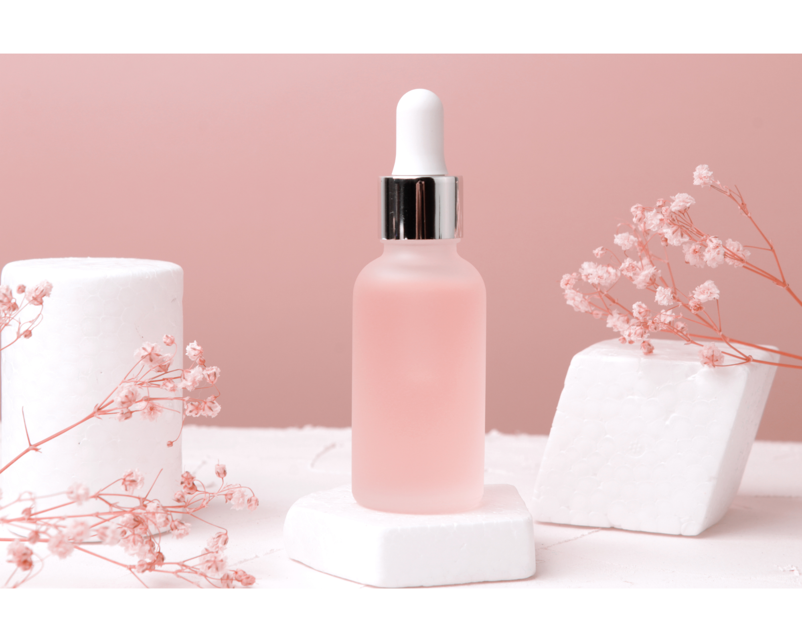
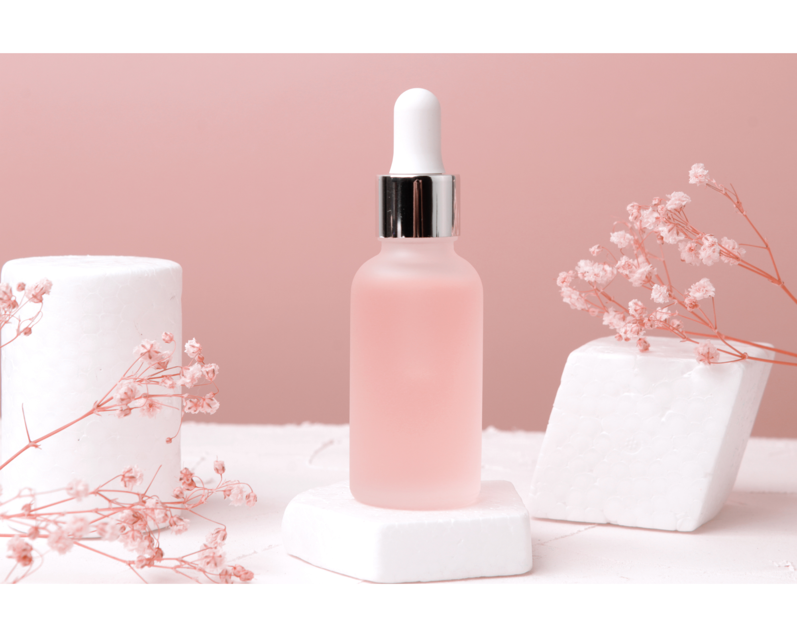

- Tree of Life Cosmetics


 

Discover the allure of nature's palette with our GerberaGlow Natural Face Tint. This unique product is your passport to attaining an effervescent, youthful complexion reminiscent of the freshness of dawn.
Drawing from the natural splendor of Gerbera daisies, known for their brilliant and striking colors, our face tint captures the essence of these blooms. Just as a Gerbera daisy adds a touch of life and color to any bouquet, our tint is designed to seamlessly amplify your skin's natural charm.